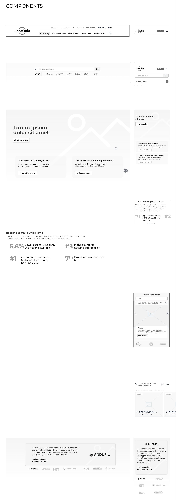

JobsOhio
We redesigned JobsOhio's digital front door from the sitemap up: a new information architecture, component-driven wireframes, a full functional specification, and a detailed design system built to make great happen.

Overview
Rebuilding Ohio's economic-development platform around the way companies actually choose a state.
JobsOhio is the state's private, nonprofit economic development corporation. Its website is the first stop for site selectors, executives and talent weighing Ohio against every other state — and the legacy platform had grown into hundreds of loosely connected pages that were hard to navigate and harder to maintain.
Placeholder overview text. Describe the starting point: what the previous site did well, where it fell short, what the business wanted the redesign to achieve, and how the engagement was scoped. Two or three short paragraphs work best here.
Placeholder overview text. Close with the outcome in one sentence — the thing a reader should remember if they read nothing else.

Our objectives
-
01.Placeholder objective. Reorganise a sprawling site into an architecture that mirrors how businesses evaluate a location.
-
02.Placeholder objective. Define a reusable component library so every page is assembled from the same proven modules.
-
03.Placeholder objective. Specify every interaction, state and content rule so design intent survives the build.
-
04.Placeholder objective. Translate the JobsOhio brand into a bold, confident visual system for desktop and mobile.
-
05.Placeholder objective. Make conversion paths — site search, incentives, talent, contact — unmissable on every page.
Make Great Happen, Digitally


A home page that sells Ohio
Placeholder. A confident, video-led hero followed by three clear paths — sites, incentives, talent — and proof points that make the case at a glance.
Industries built to soar
Placeholder. One flexible industry template with sub-sector tabs, success stories, rankings, video and a "we're ready" conversion moment.
Sites, searchable
Placeholder. Site selection reframed around the selector's workflow — search, compare, shortlist — with certified sites surfaced first.
Navigation that maps the state
Placeholder. Mega-menus that expose depth without overwhelming, and a mobile drawer that keeps every section one tap away.
News. Worthy.
Placeholder. A newsroom, blog and media-resources hub unified under one filterable feed, designed for both journalists and prospects.
Built with AI, owned by humans
An AI-assisted process, from sitemap to specification to screen
Placeholder. Describe where AI accelerated the work — auditing the legacy site, drafting the content model, generating spec variations, checking components against the design system — and where human judgement made the calls.
Placeholder. Note the guardrails: every deliverable was reviewed and owned by the design team; AI shortened the distance between decision and artefact, it did not make the decisions.
Placeholder quote. A sentence or two from the client or a collaborator about what the redesign changed for them — the tone of the work, the speed, the result.— Name, Title, JobsOhio
One system, every page
From a 7.0 sitemap to a component-driven specification
Placeholder. The sitemap went through seven major revisions with the client, settling the top-level sections — Why Ohio, Site Selection, Industries, Incentives, Workforce, About, Newsroom — and the conversion pages that hang off them.
Placeholder. Component wireframes defined a shared kit of modules; the functional specification documented behaviour, states and content rules screen by screen so development could proceed without guesswork.



The impact
A platform Ohio can grow on, page by page
Placeholder. Summarise the result: what launched, how the team works with the new system, and any early performance indicators worth sharing.
Desktop page wireframes
Placeholder. Every template and conversion page defined before visual design began.
Functional specification
Placeholder. Behaviour, states and content rules documented across five delivery batches.
Sitemap revisions
Placeholder. The architecture was iterated with stakeholders until every path had a purpose.